THE STORY OF AI
NEIL GOGTE INSTITUTE OF TECHNOLOGY
Subject: Artificial Intelligence | Student Name: Y.Charishma
AI..AI...AI....everywhere you turn, someone's talking about it, your phone uses it, your favourite apps use it, even your playlist knows your mood because of it.
But wait — what actually IS AI?
What is AI?
Artificial Intelligence (AI) is a technology that enables machines and computers to perform tasks that typically require human intelligence. It allows systems to learn from data, recognise patterns, and make decisions to solve complex problems.
But AI didn't suddenly appear with ChatGPT.
The dream of creating intelligent machines started long before smartphones and social media existed.
In fact, scientists have been trying to build thinking machines for more than 70 years...
Evolution of AI
| Year | Milestone | Explanation | Fun Facts |
|---|---|---|---|
| 1952 | First self learning program | A computer played checkers against itself and got better without being told how | This was the world's first self learning program — built just for a board game! |
| 1956 | AI gets its name | Scientists at Dartmouth agreed computers could think like humans and gave it a name | The word "Artificial Intelligence" was coined in a college proposal letter |
| 1966 | First chatbot ELIZAA | program acted like a therapist — people thought it genuinely understood them | People got so emotionally attached to ELIZA that its own creator was disturbed by it |
| 1974 | AI funding stopped | Companies promised too much, delivered too little — research paused for 15 years | This period is literally called the "AI Winter" |
| 1997 | Deep Blue beat Chess world champion | IBM's computer beat Garry Kasparov by thinking millions of moves per second | Kasparov accused IBM of cheating and demanded a rematch — IBM refused and quietly retired Deep Blue |
| 2016 | AlphaGo beat Go world champion | Google's AI beat Lee Sedol at a game so complex people said computers would NEVER win | Over 200 million people watched this match worldwide — more than the Super Bowl |
| 2018 | Transformers changed everything | Google invented a new way for computers to understand language | GPT, ChatGPT, Gemini, Claude — ALL built on this one 2018 idea |
| 2022 | ChatGPT launched | OpenAI made AI as easy as texting — 100 million people tried it in 2 months | ChatGPT grew faster than TikTok, Instagram and every other app in history |
| 2024 | AlphaFold won Nobel Prize | Google's AI solved a 50 year old biology mystery about protein shapes | An AI winning science's biggest award was unthinkable just 10 years ago |
| 2026 | AI understands the real world | AI can now see, hear, talk AND interact with physical things | We are literally living inside this timeline right now |
Over time, AI evolved from simple experiments into powerful systems capable of learning, reasoning and even creating art.
But what actually gives modern AI its intelligence?
To answer that, we need to look inside the “brain” of AI:
What is an AI Model?
An AI model is a computer program trained to recognize patterns in data and make decisions based on those patterns. At its core it answers one big question — "Given what I've seen before, what should I do with what I see now?"
Think of an AI model like a student learning from experience.
The student studies examples, makes mistakes, improves, and slowly becomes smarter.
AI works in a surprisingly similar way.
1. Data — The Fuel:
Without data an AI model is like a car with no fuel — it simply won't move. Data is the raw material AI uses to learn. Every image labeled "cat," every customer review, every purchase history — it all feeds the model's brain.
2.Algorithms — The Engine:
Algorithms are the set of rules the model uses to process data and identify patterns. Think of an algorithm like a recipe — it tells the AI how to learn from data. Different algorithms work better for different tasks, like choosing a workout plan — some build strength, others build endurance.
3.Parameters — The Memory Knobs:
Once a model starts learning it tweaks internal settings called parameters — these are the model's "memory knobs," values it adjusts during training to get better predictions.
How does it Work?
But learning doesn't happen magically.
AI must first be trained — sometimes using millions of examples.

The Black Box Problem (Interesting Twist!)
Even the scientists who build the most advanced AI don't fully understand how it makes decisions inside. The internal representations are too complex for humans to read — which is why there is growing interest in "explainable AI" — teaching AI to show its work.
AI may sound futuristic, but the truth is:
most people already use AI every single day without even realizing it.
From unlocking your phone to getting movie recommendations, AI quietly works behind the scenes in modern life.
It's all around us
AI Can Predict What You Type:
When your phone suggests the next word while typing, AI is predicting what you are most likely to say based on millions of writing patterns.
AI Creates Music & Art:
Modern AI can generate paintings, songs, voices and even movie scenes in seconds using patterns learned from human creations.
Social Media Uses AI Constantly:
Instagram, YouTube and TikTok use AI every second to decide which posts and videos appear on your screen.
AI Can Understand Human Voice:
Assistants like Alexa, Siri and Google Assistant use AI to recognize accents, words and even emotions in human speech.
AI In Video Games:
In many video games, enemy characters use AI to react to player actions and make gameplay feel realistic.
AI Learns Your Preferences:
Spotify and Netflix slowly learn your taste over time — which is why recommendations often become surprisingly accurate.
AI Can Translate Languages Instantly:
Social media companies are now building AI systems that can change voices, translate speech and even match lip movements in real time.
This means a creator could record a video in one language and AI could automatically make it sound natural in many other languages.
For the first time in history, AI is helping humans communicate beyond language barriers almost instantly.
Futuristic? Realistic? Almost unbelievable?
That is the power of AI
The story isn't over yet...
AI is becoming smarter every year.
Scientists are working on AI that can drive cars, help students learn, discover medicines and solve problems faster than ever before.
At the same time, people are asking important questions:
How powerful should AI become?
Can humans fully control it?
Could machines someday think like humans?
Nobody knows exactly what the future will look like.
But one thing is certain:
the story of AI is just beginning.